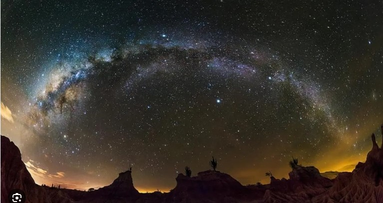

Desiertos de La Tatacoa y La Guajira:
Estas regiones son conocidas por tener cielos oscuros y despejados, lo que las convierte en lugares ideales para la observación astronómica. La Tatacoa, en el departamento de Huila, y La Guajira, en el extremo norte del país, ofrecen condiciones óptimas para observar planetas, estrellas y galaxias.
Leer mas